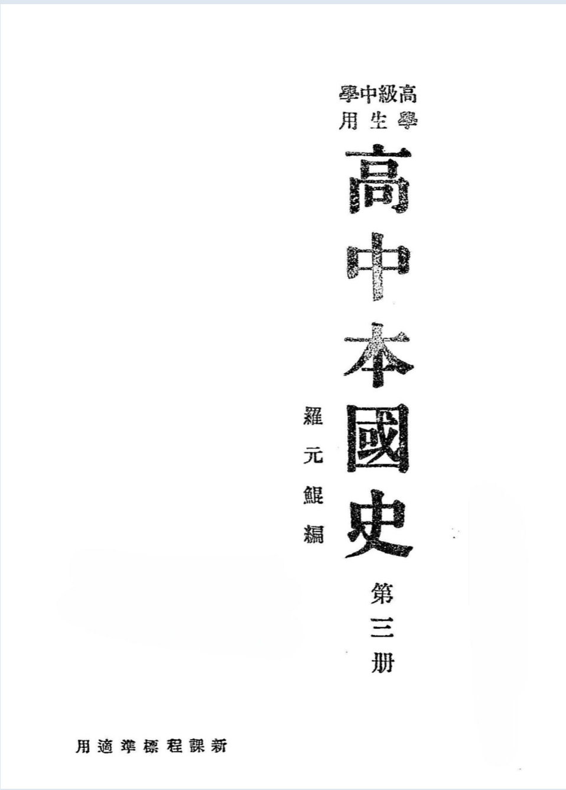

Occurrences
101
Exact minzu hits in this book
Findings / History / 楂樹腑鏈浗鍙?/p>
 Textbook
This view contains all KWIC results for 姘戞棌 in this book, followed by the book's individual
frequency result.
This table lists every minzu KWIC result found in this textbook. Occurrences 101 Exact minzu hits in this book Analysis chars 123,945 Cleaned characters used as denominator Per 10k chars 8.15 Normalized frequency
楂樹腑鏈浗鍙?/h1>
All KWIC Results in This Book
No.
Left context
Keyword
Right context
1
鏀垮簻涔嬭粛璨＄媭娉?闄勫崡鏂瑰叺浜嬪湒鍦嬫皯榛ㄦ敼绲勫墠寰岀媭娉佽〃绺界悊閬哄洃缍辫琛ㄤ笁姘戜富缇╃啊鏄庤〃)绗崄涓夌珷浜斿崊鎱樻鑸囦腑鍦?/td>
姘戞棌
閬嬪嫊涔嬮€插睍涓€鍥?/td>
2
涓夋皯涓荤京涔嬬⒑瀹氬摬瀛歌垏绀炬渻绉戝鑷劧绉戝鑸囪棟琛?闄勪笁姘戜富缇╂暀鑲茬侗瑕佽〃)浜屼笁绗叚绶ㄧ祼璜栦簩涓夌涓€绔犳垜鍦?/td>
姘戞棌
鐧煎睍涔嬪洏椤т笂鍙ゆ皯鏃忎箣鐧煎睍涓彜姘戞棌涔嬬櫦灞曡繎涓栨皯鏃忎箣鐧煎睍鐝句唬姘戞棌涔嬬櫦灞曠浜岀珷涓湅灏嶄笘鐣屼箣浣垮懡涓変簲鎴戝湅姝峰彶
3
瀹氬摬瀛歌垏绀炬渻绉戝鑷劧绉戝鑸囪棟琛?闄勪笁姘戜富缇╂暀鑲茬侗瑕佽〃)浜屼笁绗叚绶ㄧ祼璜栦簩涓夌涓€绔犳垜鍦嬫皯鏃忕櫦灞曚箣鍥橀¨涓婂彜
姘戞棌
涔嬬櫦灞曚腑鍙ゆ皯鏃忎箣鐧煎睍杩戜笘姘戞棌涔嬬櫦灞曠従浠ｆ皯鏃忎箣鐧煎睍绗簩绔犱腑鍦嬪皪涓栫晫涔嬩娇鍛戒笁浜旀垜鍦嬫鍙蹭箣鍏夋Ξ鍙婄従鐙€鎴戝湅姘?/td>
4
瀛歌嚜鐒剁瀛歌垏钘濊(闄勪笁姘戜富缇╂暀鑲茬侗瑕佽〃)浜屼笁绗叚绶ㄧ祼璜栦簩涓夌涓€绔犳垜鍦嬫皯鏃忕櫦灞曚箣鍥橀¨涓婂彜姘戞棌涔嬬櫦灞曚腑鍙?/td>
姘戞棌
涔嬬櫦灞曡繎涓栨皯鏃忎箣鐧煎睍鐝句唬姘戞棌涔嬬櫦灞曠浜岀珷涓湅灏嶄笘鐣屼箣浣垮懡涓変簲鎴戝湅姝峰彶涔嬪厜姒強鐝剧媭鎴戝湅姘戞棌浠婃棩涔嬭铂浠?
5
琛?闄勪笁姘戜富缇╂暀鑲茬侗瑕佽〃)浜屼笁绗叚绶ㄧ祼璜栦簩涓夌涓€绔犳垜鍦嬫皯鏃忕櫦灞曚箣鍥橀¨涓婂彜姘戞棌涔嬬櫦灞曚腑鍙ゆ皯鏃忎箣鐧煎睍杩戜笘
姘戞棌
涔嬬櫦灞曠従浠ｆ皯鏃忎箣鐧煎睍绗簩绔犱腑鍦嬪皪涓栫晫涔嬩娇鍛戒笁浜旀垜鍦嬫鍙蹭箣鍏夋Ξ鍙婄従鐙€鎴戝湅姘戞棌浠婃棩涔嬭铂浠?闄勭従浠ｅ彶澶т簨琛?/td>
6
鏁欒偛缍辫琛?浜屼笁绗叚绶ㄧ祼璜栦簩涓夌涓€绔犳垜鍦嬫皯鏃忕櫦灞曚箣鍥橀¨涓婂彜姘戞棌涔嬬櫦灞曚腑鍙ゆ皯鏃忎箣鐧煎睍杩戜笘姘戞棌涔嬬櫦灞曠従浠?/td>
姘戞棌
涔嬬櫦灞曠浜岀珷涓湅灏嶄笘鐣屼箣浣垮懡涓変簲鎴戝湅姝峰彶涔嬪厜姒強鐝剧媭鎴戝湅姘戞棌浠婃棩涔嬭铂浠?闄勭従浠ｅ彶澶т簨琛?鍙插湅鏈腑楂?/td>
7
鏃忎箣鐧煎睍涓彜姘戞棌涔嬬櫦灞曡繎涓栨皯鏃忎箣鐧煎睍鐝句唬姘戞棌涔嬬櫦灞曠浜岀珷涓湅灏嶄笘鐣屼箣浣垮懡涓変簲鎴戝湅姝峰彶涔嬪厜姒強鐝剧媭鎴戝湅
姘戞棌
浠婃棩涔嬭铂浠?闄勭従浠ｅ彶澶т簨琛?鍙插湅鏈腑楂?/td>
8
,寰峰畻鎵裤€傚湅闃藉嵄娆插湒娌汇€備笉濡傞鍚庢墍鍒跺绲辫垐,闈╁懡璧?涓嶆暩鏈?鍏卞拰濮嬨€傚崄浜屽偝涓夌櫨杓夈€傛豢娣稿€?甯濆埗鏀广€備簲
姘戞棌
浜旇壊鏃椼€傚崡鍖椾竴闀峰厜杓濄€傚彶鍦嬫湰涓珮
9
姘戝湅鎴愮珛浠ュ緦涓€绗簲绶ㄧ従浠ｅ彶绱勫叕鍏冧竴涔濅簩骞磋捣鑷崇従鍦ㄧ涓€绔犻潻鍛芥€濇兂涔嬪媰鑸堣垏瀛腑灞卞厛鐢熼潻鍛芥豢|娣镐互灏戞暩
姘戞棌
鍏ヤ富涓瓅鍦?鏈€澶氭暩涔嬫饥|鏃?鍙楀叾鎺у埗鑰呭瀭涓夌櫨椁樺勾銆備腑钁変互閭?鎬濇兂涔嬫犯|鏀胯厫鏁?绲辨不鍔涜杽寮?鍏т簜灞㈣捣銆?/td>
10
娣稿京鏄庣埐瀹楁棬,楗掓湁
姘戞棌
闈╁懡鎰忓懗銆傚緬浠ョ劇楫槑涔嬩富缇╄垏璩㈣兘涔嬮牁鈰,鏁呭叾寰屼笉鍏嶆祦鏂煎挤姊佸姭娈?鐖蹭笘瑭梾銆傜湠姝ｄ箣闈╁懡閬嬪嫊,瀵﹁嚜涓夋皯
11
鍚屾檪鐧兼槑涓夋皯涓荤京銆傚叾鏁呭洜娣稿涓嶆尟,甯濆湅涓荤京涓北涓荤京涔嬭€呭埄鐢ㄥ叾杌嶄簨鐨勩€佹斂娌荤殑銆佺稉婵熺殑鍎秺涔嬪嫝鍔?鍚戝急灏?/td>
姘戞棌
澹撹揩渚电暐,鑷撮櫡鎴戝湅鍋夊ぇ鏂兼娈栨皯鍦颁箣鍘勯亱,鐒℃硶鑷嫈銆傚厛鐭ュ厛瑕轰箣涓瓅灞卞厛鐢熶箖鎳夐亱鑰岀敓,鎻愬€′笁姘戜富缇╀互鏁戜腑
12
鍘勯亱,鐒℃硶鑷嫈銆傚厛鐭ュ厛瑕轰箣涓瓅灞卞厛鐢熶箖鎳夐亱鑰岀敓,鎻愬€′笁姘戜富缇╀互鏁戜腑|鍦嬫晳涓栫晫銆傚張鐪艰鑷崄涔濅笘绱€浠ヤ締,
姘戞棌
涓荤京涔嬫疆娴?妤电埐婢庢箖銆傜劧姣忕埐閲庡績鑰呮墍鍒╃敤,鑷存祦鐖茬嫻缇╃殑姘戞棌鍦嬪涓荤京,閫犳垚涓栫晫涓婄劇绐箣缃儭銆傜壒鎻愬€℃皯娆?/td>
13
缇╀互鏁戜腑|鍦嬫晳涓栫晫銆傚張鐪艰鑷崄涔濅笘绱€浠ヤ締,姘戞棌涓荤京涔嬫疆娴?妤电埐婢庢箖銆傜劧姣忕埐閲庡績鑰呮墍鍒╃敤,鑷存祦鐖茬嫻缇╃殑
姘戞棌
鍦嬪涓荤京,閫犳垚涓栫晫涓婄劇绐箣缃儭銆傜壒鎻愬€℃皯娆婄殑鍜屾皯鐢熺殑姘戞棌涓荤京,鍙插湅鏈腑楂樺灏囬亷鍘讳箣瑾ら粸鐭,鑰屾皯鏃忎富
14
,妤电埐婢庢箖銆傜劧姣忕埐閲庡績鑰呮墍鍒╃敤,鑷存祦鐖茬嫻缇╃殑姘戞棌鍦嬪涓荤京,閫犳垚涓栫晫涓婄劇绐箣缃儭銆傜壒鎻愬€℃皯娆婄殑鍜屾皯鐢熺殑
姘戞棌
涓荤京,鍙插湅鏈腑楂樺灏囬亷鍘讳箣瑾ら粸鐭,鑰屾皯鏃忎富缇╀箣鐪炶┊涔冭銆傛皯鏃忎富缇╁嵔姘戞棌鑷焙涓荤京,鍏舵剰缇╁彲鍒嗗叐鏂?/td>
15
鐨勬皯鏃忓湅瀹朵富缇?閫犳垚涓栫晫涓婄劇绐箣缃儭銆傜壒鎻愬€℃皯娆婄殑鍜屾皯鐢熺殑姘戞棌涓荤京,鍙插湅鏈腑楂樺灏囬亷鍘讳箣瑾ら粸鐭,鑰?/td>
姘戞棌
涓荤京涔嬬湠瑭箖瑕嬨€傛皯鏃忎富缇╁嵔姘戞棌鑷焙涓荤京,鍏舵剰缇╁彲鍒嗗叐鏂?/td>
16
涓栫晫涓婄劇绐箣缃儭銆傜壒鎻愬€℃皯娆婄殑鍜屾皯鐢熺殑姘戞棌涓荤京,鍙插湅鏈腑楂樺灏囬亷鍘讳箣瑾ら粸鐭,鑰屾皯鏃忎富缇╀箣鐪炶┊涔冭銆?/td>
姘戞棌
涓荤京鍗芥皯鏃忚嚜姹轰富缇?鍏舵剰缇╁彲鍒嗗叐鏂?/td>
17
涔嬬姜鎯°€傜壒鎻愬€℃皯娆婄殑鍜屾皯鐢熺殑姘戞棌涓荤京,鍙插湅鏈腑楂樺灏囬亷鍘讳箣瑾ら粸鐭,鑰屾皯鏃忎富缇╀箣鐪炶┊涔冭銆傛皯鏃忎富缇╁嵔
姘戞棌
鑷焙涓荤京,鍏舵剰缇╁彲鍒嗗叐鏂?/td>
18
闈?涓€鏂归潰绲愬悎鎴戝€戣嚜宸变箣
姘戞棌
,鍦ㄤ竴姊濇埌绶氫笂鎶垫姉澶栦締姘戞棌涔嬩镜鐣ュ拰澹撹揩,浣夸腑|鍦嬫皯鏃忓畬鍏ㄨВ鏀?浠ヨ嚜鐢辩崹绔嬫柤涓栫晫銆傚悓鏅傜妤电殑鐖茶嚜宸辨皯鏃?/td>
19
闈?涓€鏂归潰绲愬悎鎴戝€戣嚜宸变箣姘戞棌,鍦ㄤ竴姊濇埌绶氫笂鎶垫姉澶栦締
姘戞棌
涔嬩镜鐣ュ拰澹撹揩,浣夸腑|鍦嬫皯鏃忓畬鍏ㄨВ鏀?浠ヨ嚜鐢辩崹绔嬫柤涓栫晫銆傚悓鏅傜妤电殑鐖茶嚜宸辨皯鏃忎箣鍒╃泭鑰屽ギ楝?浣垮湅鍏у悇姘戞棌
20
闈?涓€鏂归潰绲愬悎鎴戝€戣嚜宸变箣姘戞棌,鍦ㄤ竴姊濇埌绶氫笂鎶垫姉澶栦締姘戞棌涔嬩镜鐣ュ拰澹撹揩,浣夸腑|鍦?/td>
姘戞棌
瀹屽叏瑙ｆ斁,浠ヨ嚜鐢辩崹绔嬫柤涓栫晫銆傚悓鏅傜妤电殑鐖茶嚜宸辨皯鏃忎箣鍒╃泭鑰屽ギ楝?浣垮湅鍏у悇姘戞棌涓€寰嬪钩绛変粬鏂归潰鏄壎鍔╀笘鐣屼笂
21
姘戞棌,鍦ㄤ竴姊濇埌绶氫笂鎶垫姉澶栦締姘戞棌涔嬩镜鐣ュ拰澹撹揩,浣夸腑|鍦嬫皯鏃忓畬鍏ㄨВ鏀?浠ヨ嚜鐢辩崹绔嬫柤涓栫晫銆傚悓鏅傜妤电殑鐖茶嚜宸?/td>
姘戞棌
涔嬪埄鐩婅€屽ギ楝?浣垮湅鍏у悇姘戞棌涓€寰嬪钩绛変粬鏂归潰鏄壎鍔╀笘鐣屼笂涓€鍒囪澹撹揩涔嬫皯鏃忓叡鍚屽ギ楝?浣垮叏涓栫晫鍏卞悓瑙ｆ斁,浠ヨ嚜
22
姘戞棌涔嬩镜鐣ュ拰澹撹揩,浣夸腑|鍦嬫皯鏃忓畬鍏ㄨВ鏀?浠ヨ嚜鐢辩崹绔嬫柤涓栫晫銆傚悓鏅傜妤电殑鐖茶嚜宸辨皯鏃忎箣鍒╃泭鑰屽ギ楝?浣垮湅鍏у悇
姘戞棌
涓€寰嬪钩绛変粬鏂归潰鏄壎鍔╀笘鐣屼笂涓€鍒囪澹撹揩涔嬫皯鏃忓叡鍚屽ギ楝?浣垮叏涓栫晫鍏卞悓瑙ｆ斁,浠ヨ嚜鐢辩崹绔嬪嫏浣垮叏涓栫晫鐒℃湁寮峰急澶?/td>
23
鑷敱鐛ㄧ珛鏂间笘鐣屻€傚悓鏅傜妤电殑鐖茶嚜宸辨皯鏃忎箣鍒╃泭鑰屽ギ楝?浣垮湅鍏у悇姘戞棌涓€寰嬪钩绛変粬鏂归潰鏄壎鍔╀笘鐣屼笂涓€鍒囪澹撹揩涔?/td>
姘戞棌
鍏卞悓濂,浣垮叏涓栫晫鍏卞悓瑙ｆ斁,浠ヨ嚜鐢辩崹绔嬪嫏浣垮叏涓栫晫鐒℃湁寮峰急澶у皬,鍏遍€叉柤澶у悓涔嬪煙,鏄墖涓瓅灞变富缇╂渶寰屼箣鐩?/td>
24
瀛珅涓北|涓婃浉鏉巪榇荤珷,鍒楄垑浣曢爡瑕侀粸?(4)瀛腑|灞辩祫绻斾綍闋呴潻鍛藉湗?楂斾互浣曠ó鐖叉渶鏈夊嫝?鍔沕5)閬庡幓涔?/td>
姘戞棌
涓荤京鍕曢亱鍛介潻涔嬪娓呮湁浣曡?榛炲涓瓅灞辩敤浣曟硶浠ョ煰姝?涔?6)姘戞棌鑷焙涓荤京鍏舵剰缇╁彲鍒嗗咕鏂?闈㈢浜岀珷娣稿涔?/td>
25
鍛藉湗?楂斾互浣曠ó鐖叉渶鏈夊嫝?鍔沕5)閬庡幓涔嬫皯鏃忎富缇╁嫊閬嬪懡闈╀箣瀛ｆ竻鏈変綍瑾?榛炲涓瓅灞辩敤浣曟硶浠ョ煰姝?涔?6)
姘戞棌
鑷焙涓荤京鍏舵剰缇╁彲鍒嗗咕鏂?闈㈢浜岀珷娣稿涔嬮潻鍛介亱鍕曟犯瀛ｉ潻鍛介亱鍕?鍒嗚粛浜嬫殫娈哄叐娑傘€傝粛浜嬮亱鍕曞鑷犯鍏墊绶掍簩鍗?/td>
26
(6)濂夊ぉ|钘嶅ぉ钄殀涔濇湀浠ュ緦杈涗亥闈╁懡妲硜琛ㄧ珛鎴愪箣鍦嬫皯鑿腑鑸囧懡闈╀亥杈涖€?鐢?鎰忕京(1)鍥犳豢鏃忎箣澹撹揩鑸囧惥
姘戞棌
鐨勫弽鎶楅亱鍕?2)鍥犲笣鍦嬩富缇╃殑澹撹揩鑸囧惥姘戞棌鐨勫弽鎶楅亱鍕曢Ξ鍦嬬拫|娣歌粛绲卞弗姝︽饥涔嬪焦娓呭嫕姘戞晽榛冨吀|姘戣粛鍏冨弗銆嶆埌
27
琛ㄧ珛鎴愪箣鍦嬫皯鑿腑鑸囧懡闈╀亥杈涖€?鐢?鎰忕京(1)鍥犳豢鏃忎箣澹撹揩鑸囧惥姘戞棌鐨勫弽鎶楅亱鍕?2)鍥犲笣鍦嬩富缇╃殑澹撹揩鑸囧惥
姘戞棌
鐨勫弽鎶楅亱鍕曢Ξ鍦嬬拫|娣歌粛绲卞弗姝︽饥涔嬪焦娓呭嫕姘戞晽榛冨吀|姘戣粛鍏冨弗銆嶆埌寮靛嫑|娓呰粛绲卞弗鍗椾含涔嬪焦娓呮晽姘戝嫕(涔?缍撻亷
28
甯ャ€嶉潻鍛芥И娉佸攼绱瑰剙|娓呰粛浠ｈ〃|涓诲悰鎲茬劇鏁堝拰涓婃捣鏈冭浼嶅环鑺硘姘戣粛浠ｈ〃|涓诲叡鍜屾垚鍔?1)鎵撳€掓豢娲叉斂搴?鏄?/td>
姘戞棌
瑙ｆ斁绗竴姝ャ€傛槸姘戞棌涓荤京涓€閮ㄥ垎鐨勬垚鍔?涓欐垚绺緙(2)鎺ㄧ炕鏁稿崈骞村悰涓诲皥鍒?鏄斂娌婚潻鍛界涓€姝?鏄皯娆婁富缇╀竴
29
|娓呰粛浠ｈ〃|涓诲悰鎲茬劇鏁堝拰涓婃捣鏈冭浼嶅环鑺硘姘戣粛浠ｈ〃|涓诲叡鍜屾垚鍔?1)鎵撳€掓豢娲叉斂搴?鏄皯鏃忚В鏀剧涓€姝ャ€傛槸
姘戞棌
涓荤京涓€閮ㄥ垎鐨勬垚鍔?涓欐垚绺緙(2)鎺ㄧ炕鏁稿崈骞村悰涓诲皥鍒?鏄斂娌婚潻鍛界涓€姝?鏄皯娆婁富缇╀竴閮ㄥ垎鐨勬垚鍔?1)涓?/td>
30
绗崄绔犺彲鐩涢爴鏈冭鑸囦腑鍦嬭彲鐩涢爴鑷反榛巪鍜屾渻寰?涓栫晫寮卞皬
姘戞棌
鐨嗕笉婊挎剰鏂间簲寮峰湅涔嬭檿缃?鎴戙€佸湅姘戣灏ょ埐鎲ゆ縺銆備箣鏈冨彫闆嗚姘憒鍦嬪崄骞?缇巪鍦嬪ぇ绺界当鍝坾瀹氱埐闃叉鏈締澶ф埌璧?/td>
31
鍦嬩笉闆ｇ珛韬嬫柤澶у钩涔嬪煙銆傚啀閫蹭竴姝?寤㈤櫎涓嶅钩绛夋绱?浠ュ洓钀惉姘戣鍏卞悓鍔姏鏂煎ぇ浜瀨绱颁簽涓荤京,鍓囨澅|浜炶寮卞皬
姘戞棌
,鍙堜笉闆ｈ垏涓栫晫寮峰ぇ姘戞棌绔嬫柤骞崇瓑涔嬪湴涔熴€傛儨涔庢|姘忎笉瓒充互瑾炴,闆嗗悎涓€鐝粛闁ャ€佸畼鍍氥€佽卜杈︺€佸湡璞甫鍓峾娣搁伜
32
鍐嶉€蹭竴姝?寤㈤櫎涓嶅钩绛夋绱?浠ュ洓钀惉姘戣鍏卞悓鍔姏鏂煎ぇ浜瀨绱颁簽涓荤京,鍓囨澅|浜炶寮卞皬姘戞棌,鍙堜笉闆ｈ垏涓栫晫寮峰ぇ
姘戞棌
绔嬫柤骞崇瓑涔嬪湴涔熴€傛儨涔庢|姘忎笉瓒充互瑾炴,闆嗗悎涓€鐝粛闁ャ€佸畼鍍氥€佽卜杈︺€佸湡璞甫鍓峾娣搁伜瀛?姹叉辈鏂煎杽寰屾渻璀颁箣閫?/td>
33
|鍒嗗湅闅涖€佹斂娌汇€佺稉婵熶笁鏂归潰銆屾И鎷殑(1)鍠氳捣姘戣|杈层€佸伐銆佸晢銆傚鍏靛ぇ鑱悎(2)鑱悎涓栫晫涓婁互骞崇瓑寰呮垜涔?/td>
姘戞棌
鍒嗕笘鐣岃В鏀俱€佷笘鐣屽ぇ鍚屼簩姝ラ伜|闈╁懡绺界悊鍥戙€?1)寤哄湅鏂圭暐|鍒嗗績鐞嗙墿璩€佺ぞ鏈冧笁闋?2)寤哄湅澶х侗|鍒嗚粛鏀裤€?/td>
34
鍦嬫柟鐣鍒嗗績鐞嗙墿璩€佺ぞ鏈冧笁闋?2)寤哄湅澶х侗|鍒嗚粛鏀裤€傝〒鏀裤€佹啿鏀夸笁鏈熷叿楂旂殑(涔?鏂规硶(3)涓夋皯涓荤京|鍒?/td>
姘戞棌
(姘戞湁)姘戞瑠(姘戞不)姘戠敓(姘戜韩)涓夐爡((4)绗竴娆″叏鍦嬩唬琛ㄥぇ鏈冨瑷€((1)姹哄畾鎲叉硶(1)鍦嬫皯鏈冭(2
35
(鐢?閲嬪悕|澶у嚒涓€绋富缇?鏄敱鎬濇兂銆佷俊浠般€佸姏閲忎笁鑰呮贩鍚堣€屾垚,涓夋皯涓荤京,灏辨槸鏁戝湅涓荤京瀹氱京銆?1)
姘戞棌
鏄敱琛€绲便€佺敓娲汇€佽獮瑷€3瀹楁暀銆侀ⅷ淇楃繏鎱ｄ簲绋姏閲忓ぉ鐒堕€插寲鑰屾垚((N)姘戞棌涓荤京灏辨槸鍦嬫棌涓荤京,灏辨槸鍦嬪鍦栫櫦閬?/td>
36
姘戜富缇?灏辨槸鏁戝湅涓荤京瀹氱京銆?1)姘戞棌鏄敱琛€绲便€佺敓娲汇€佽獮瑷€3瀹楁暀銆侀ⅷ淇楃繏鎱ｄ簲绋姏閲忓ぉ鐒堕€插寲鑰屾垚((N)
姘戞棌
涓荤京灏辨槸鍦嬫棌涓荤京,灏辨槸鍦嬪鍦栫櫦閬?绋棌鍦栫敓瀛樼殑瀵惰矟銆?1)灏嶄腑鍦媩涓湅姘戞棌鑷眰瑙ｆ斁,澧冨収鍚勬皯鏃忎竴寰嬪钩
37
绋姏閲忓ぉ鐒堕€插寲鑰屾垚((N)姘戞棌涓荤京灏辨槸鍦嬫棌涓荤京,灏辨槸鍦嬪鍦栫櫦閬?绋棌鍦栫敓瀛樼殑瀵惰矟銆?1)灏嶄腑鍦媩涓湅
姘戞棌
鑷眰瑙ｆ斁,澧冨収鍚勬皯鏃忎竴寰嬪钩绛変箼(杈︽硶缇╀富)鏃忔皯((2)灏嶄笘鐣寍鑱悎涓栫晫涓婅澹撹揩姘戞棌鍏卞悓瑙ｆ斁,鍏ㄤ笘鐣屽悇
38
(N)姘戞棌涓荤京灏辨槸鍦嬫棌涓荤京,灏辨槸鍦嬪鍦栫櫦閬?绋棌鍦栫敓瀛樼殑瀵惰矟銆?1)灏嶄腑鍦媩涓湅姘戞棌鑷眰瑙ｆ斁,澧冨収鍚?/td>
姘戞棌
涓€寰嬪钩绛変箼(杈︽硶缇╀富)鏃忔皯((2)灏嶄笘鐣寍鑱悎涓栫晫涓婅澹撹揩姘戞棌鍏卞悓瑙ｆ斁,鍏ㄤ笘鐣屽悇姘戞棌涓€寰嬪钩绛夌洰鐨剕鎵?/td>
39
(1)灏嶄腑鍦媩涓湅姘戞棌鑷眰瑙ｆ斁,澧冨収鍚勬皯鏃忎竴寰嬪钩绛変箼(杈︽硶缇╀富)鏃忔皯((2)灏嶄笘鐣寍鑱悎涓栫晫涓婅澹撹揩
姘戞棌
鍏卞悓瑙ｆ斁,鍏ㄤ笘鐣屽悇姘戞棌涓€寰嬪钩绛夌洰鐨剕鎵撶牬绋棌涓婁笉骞崇瓑闅庣礆,浜洪,鐒＄晫闄愭秷寮ó鏃忔埌鐖?鏄洶銆屾皯鏈夈€?F
40
鑷眰瑙ｆ斁,澧冨収鍚勬皯鏃忎竴寰嬪钩绛変箼(杈︽硶缇╀富)鏃忔皯((2)灏嶄笘鐣寍鑱悎涓栫晫涓婅澹撹揩姘戞棌鍏卞悓瑙ｆ斁,鍏ㄤ笘鐣屽悇
姘戞棌
涓€寰嬪钩绛夌洰鐨剕鎵撶牬绋棌涓婁笉骞崇瓑闅庣礆,浜洪,鐒＄晫闄愭秷寮ó鏃忔埌鐖?鏄洶銆屾皯鏈夈€?F)鏈夊湗楂旀湁绲勭箶鐨勮浜哄氨
41
鑷充綍鏅傚瀹屽叏鑲?娓?鍒?鍏﹟寤ｇ当涓€浠ュ緦,鍏ф斂濡備綍鏁?娓呭寳浼愬浣曠睂?鍌欒│杩板叾鐣ャ€傜鍗佷笁绔犱簲鍗呮厴妗堣垏涓湅
姘戞棌
閬嬪嫊涔嬮€插睍娴锋绁簗鐟炲煼鏀?鍙泦銆屽杽寰屾渻璀?銆嶇埐杌嶉枼鏈冭涔嬭畩璞?鍦嬫皯|榛ㄦ嫆绲曞姞鍏?鍏剁祼鏋滀笂涔嬩簲鍗呮鐒℃垚
42
琛撻え,浠ユ彁鍊℃枃鍖栦簲鏁欒偛2閫愭几鎴愮珛灏忓,鐧艰钂欐枃閫卞垔,浠ラ枊閫氭皯鏅?3.鑸夎鍦嬫皯璎涙紨,鍓佃睛鍦嬫皯鏂板妵,鐧兼彯
姘戞棌
涓荤京1鍦嬫皯鏀垮簻鎴愮珛鏅?澶氬緱铇囦縿涔嬪姪2.铇囦縿鍒╃敤涔?鏆楁搷杌嶆斂澶ф瑠,鍕欎娇钂欏彜璧ゅ寲缈掗(1)涓€佷縿銆佽挋鍗斿畾
43
鍏ㄧ敤姝?鍔?5)涓妡娴蜂簨璁婂浣曠櫦?鐢熷叾鏅傚拰鎴颁箣鎯呭舰濡?浣?6)閬煎鏆村嫊浠ュ緦,濉樻步_鍗斿畾浠ュ墠,鎴戝湅鏈変綍
姘戞棌
鑻?闆?7)鏉辩渷|姒嗐€佺啽澶遍櫡,缃湪浣?浜?8:)涓婃捣_鍗斿畾銆佸娌藉崝_瀹氫箣鍏у濡?浣曚互浣曡€呯埐鏈€鍗遍毆?(
44
鍚勬柟鍧囧嫝鐖插師鍓?浣嗗彲鏆€屼笉鍙箙(寮曞晢浜烘斂搴滄淳|姝ゆ淳娆蹭互璩囨湰瀹朵唬鏇垮畼鍍氳粛闁?鑻ヨ垏澶栧湅鑱悎,鍏剁鏇村ぇ1.
姘戞棌
|涓湅姘戞棌,鑷眰瑙ｆ斁,涓湅澧冨収鍚勬皯鏃忎竴寰嬪钩绛夊叕姘戞瑠|浜烘皯鏈夊悇闋呰嚜鐢辨瑠;涓︽湁閬歌垑銆佺椒鍏嶃€佸壍鍒躲€佽姹烘瑠(
45
鍘熷墖,浣嗗彲鏆€屼笉鍙箙(寮曞晢浜烘斂搴滄淳|姝ゆ淳娆蹭互璩囨湰瀹朵唬鏇垮畼鍍氳粛闁?鑻ヨ垏澶栧湅鑱悎,鍏剁鏇村ぇ1.姘戞棌|涓湅
姘戞棌
,鑷眰瑙ｆ斁,涓湅澧冨収鍚勬皯鏃忎竴寰嬪钩绛夊叕姘戞瑠|浜烘皯鏈夊悇闋呰嚜鐢辨瑠;涓︽湁閬歌垑銆佺椒鍏嶃€佸壍鍒躲€佽姹烘瑠(涔?涓荤京3
46
浜烘斂搴滄淳|姝ゆ淳娆蹭互璩囨湰瀹朵唬鏇垮畼鍍氳粛闁?鑻ヨ垏澶栧湅鑱悎,鍏剁鏇村ぇ1.姘戞棌|涓湅姘戞棌,鑷眰瑙ｆ斁,涓湅澧冨収鍚?/td>
姘戞棌
涓€寰嬪钩绛夊叕姘戞瑠|浜烘皯鏈夊悇闋呰嚜鐢辨瑠;涓︽湁閬歌垑銆佺椒鍏嶃€佸壍鍒躲€佽姹烘瑠(涔?涓荤京3.姘戠敓|骞冲潎鍦版瑠,绡€鍒惰硣鏈?/td>
47
浣旀€ц€?鐢卞湅瀹剁稉鐕熺鐞嗕箣鍦嬫皯榛ㄧ浜屾鍏ㄥ湅浠ｈ〃澶ф渻瀹ｈ█缍辫琛ㄣ€愭敞銆嶅崄浜斿勾涓€鏈堜竴鏃?浠嶅湪寤ｅ窞闁嬫渻_(鐢?
姘戞棌
骞崇瓑涔嬭蹇?,鑷眰骞崇瓑|姘戞棌閬嬪嫊2鍚屾檪姹備粬浜轰箣骞崇瓑姘戞棌鍦嬮殯閬嬪嫊(涔?甯濆湅涓荤京鑰呬箣鏈兘1鏈夋サ楂樺害涔嬪伐鍟?/td>
48
榛ㄧ浜屾鍏ㄥ湅浠ｈ〃澶ф渻瀹ｈ█缍辫琛ㄣ€愭敞銆嶅崄浜斿勾涓€鏈堜竴鏃?浠嶅湪寤ｅ窞闁嬫渻_(鐢?姘戞棌骞崇瓑涔嬭蹇?,鑷眰骞崇瓑|
姘戞棌
閬嬪嫊2鍚屾檪姹備粬浜轰箣骞崇瓑姘戞棌鍦嬮殯閬嬪嫊(涔?甯濆湅涓荤京鑰呬箣鏈兘1鏈夋サ楂樺害涔嬪伐鍟嗘キ浜旀湁寮峰ぇ涔嬫捣杌嶅強鑸┖闅?鏈?/td>
49
瑕佽〃銆愭敞銆嶅崄浜斿勾涓€鏈堜竴鏃?浠嶅湪寤ｅ窞闁嬫渻_(鐢?姘戞棌骞崇瓑涔嬭蹇?,鑷眰骞崇瓑|姘戞棌閬嬪嫊2鍚屾檪姹備粬浜轰箣骞崇瓑
姘戞棌
鍦嬮殯閬嬪嫊(涔?甯濆湅涓荤京鑰呬箣鏈兘1鏈夋サ楂樺害涔嬪伐鍟嗘キ浜旀湁寮峰ぇ涔嬫捣杌嶅強鑸┖闅?鏈夊挤鑰屾湁鍔涗箣瀹ｅ偝姗熼棞
50
闅庣礆,鍥犵櫦灞曡€屽眳闋樺皫鍦颁綅(涓?甯濆湅涓荤京姝愭埌寰屼箣鍕曟悥浜掕嫳銆佹硶娈栨皯鍦颁箣琚杩€?浠ュ墲鍓婁箣鏁?璧疯€屽弽鎶楀弽灏?/td>
姘戞棌
涔嬭嚜瑕?鍥犱縿銆佸湡鍏╁湅闈╁懡鎴愬姛,浜堜互鏆楃ず鍙婃ā绡勪笅甯濆湅涓荤京鑰呭収閮ㄤ箣闅庣礆楝埈鐢氱儓,鍏跺ぇ澶氭暩蹇呭悓鎯呮柤琚杩箣
51
瑕?鍥犱縿銆佸湡鍏╁湅闈╁懡鎴愬姛,浜堜互鏆楃ず鍙婃ā绡勪笅甯濆湅涓荤京鑰呭収閮ㄤ箣闅庣礆楝埈鐢氱儓,鍏跺ぇ澶氭暩蹇呭悓鎯呮柤琚杩箣寮卞皬
姘戞棌
(涓€)涓栫晫鐝炬硜1寰典箣缇庢床,濡傚濞佸し銆屽ⅷ瑗垮摜鍙婇粦绋汉,鐨嗗姫鍔涜姹傝В鏀句箣寰典箣姝愭床,濡備簽鐖捐柀鏂€佺緟鏋楃編瑗挎墭
52
宸茬崹绔?鎴栨鍔姏闈╁懡,濂涓嶆噲鍙插湅鏈腑楂?.鍒╃敤鐒＄敘闅庣礆,鎿斾换闈╁懡鍓嶇窔2榧撳惞杈插伐姘戣,闉忓浐闈╁懡鍩虹鍚?/td>
姘戞棌
闈╁懡鎴扮窔,蹇呴爤鑱悎鐢熺嫻闅樼殑鍦嬪涓荤京蹇呴爤鎺掗櫎鎴?涓栫晫闈╁懡涔嬬瓥鐣ヤ簲涔樺笣鍦嬩富缇╄€呬箣浜掔浉琛濈獊,鍔姏閫叉敾6甯濆湅
53
鍦嬫淳,寰掑爆绌烘兂鑰屽凡鐩殑|鎵撳€掑笣鍦嬩富缇(1)灏嶅銆?鑱悎涓栫晫闈╁懡涔嬪厛閫插湅鎵嬫浜岃伅鍚堜笘鐣屼笂浠ュ钩绛夊緟鎴戜箣
姘戞棌
(涓?浠婃棩涓湅涔嬬敓璺鑱悎甯濆湅涓荤京鑰呭湅鍏ц澹撹揩涔嬫皯鏃忋€佺殑鐩畖鎵撳€掑笣鍦嬩富缇╄€呬箣宸ュ叿`1閫犳垚浜烘皯鐨勮粛闅婁箣
54
鑱悎涓栫晫闈╁懡涔嬪厛閫插湅鎵嬫浜岃伅鍚堜笘鐣屼笂浠ュ钩绛夊緟鎴戜箣姘戞棌(涓?浠婃棩涓湅涔嬬敓璺鑱悎甯濆湅涓荤京鑰呭湅鍏ц澹撹揩涔?/td>
姘戞棌
銆佺殑鐩畖鎵撳€掑笣鍦嬩富缇╄€呬箣宸ュ叿`1閫犳垚浜烘皯鐨勮粛闅婁箣閫犳垚寤夋綌鐨勬斂搴?2)灏嶅収鎵嬫鎴戞彁鍊′繚璀峰湅鍏ф柊宸ユキ鐢熶繚
55
娆查牁灏庝腑鍦嬩汉姘?鍔涜瑎鏀硅壇宸茶韩涔嬬敓瀛樹腑鍦嬮潻鍛戒箣閫叉|绺界悊娣辫瓨姝ょó鍩烘湰鏂规硶鑸囩祫绻斿晱椤屼箣鎰忕京涓€鏂规湡鑸囦笘鐣屽悇
姘戞棌
鍏卞悓瑙ｆ焙姝ゅ晱椤?鑰岃嚧浜洪鐢熷瓨鏂规硶鑸囩祫绻旀柤鏈€鍠勪箣閫斿伐杈涗亥闈╁懡涔嬪け鏁椾笉渚濈収绺界悊涔嬮潻鍛界▼搴忓強涓嶄綔姹傛不姹傚畨涔?/td>
56
闊垮瘋鐒躲€倈钄ｅ鍝￠暦涓瓅姝ｇ煡涔?涔冩柤浜屽崄涓夊勾浜屾湀,鐗瑰湪鍗梶鏄屾彁鍑恒€屾柊鐢熸椿閬嬪嫊,銆嶄互鐖茬洰鍓嶆晳鍦嬪缓鍦嬭垏寰╄垐
姘戞棌
鏈€鏈夋晥涔嬮亱鍕曘€傛墍璎傛柊鐢熸椿閬嬪嫊鑰?鍏惰缇╂湁:鍥涗竴鏇版暣榻?浜屾洶娣告綌,涓夋洶绨″柈,鍥涙洶妯哥礌銆備汉涔嬭。椋熶綇琛?蹇?/td>
57
娣告綌,涓夋洶绨″柈,鍥涙洶妯哥礌銆備汉涔嬭。椋熶綇琛?蹇呭倷鍏蜂互涓婂洓姊濅欢,濮嬭兘鍚堟柤绂京寤夋仴,濮嬭兘閬╂柤鐝惧湪鐢熷瓨銆傝搵鍚惧湅
姘戞棌
澶卞幓娲绘綉鐨勭敓娲诲姏涔呯煟,鑰屽叾鎵€浠ヤ镜铦曚箣鑰?鏇版暎婕€佹洶姹氬灑銆佹洶闆滀簜銆佹洶濂緢銆傝敚|姘忎箣鎵€浠ユ彁鍊℃鑰?鍗藉湪鍖?/td>
58
鏁ｆ极鐖叉暣榻?鍖栨睔鍨㈢埐娣告綌,鍖栭洔浜傜埐绨″柈,鍖栧ア渚堢埐妯哥礌銆傛儫鍏惰兘鏀硅畩鐢熸椿涔嬫柟寮?涔冭兘鎭㈠京
姘戞棌
涔嬬敓娲诲姏銆傛儫鑳芥仮寰╂皯鏃忎箣鐢熸椿鍔?涔冨彲浠ヨ獮姘戞棌寰╄垐銆傞棞鏂兼绋亱鍕曚箣璨换,|钄ｆ皬璎傘€岀禃涓嶅笇鏈涘叏楂旀皯琛嗚兘浣?/td>
59
鏁撮綂,鍖栨睔鍨㈢埐娣告綌,鍖栭洔浜傜埐绨″柈,鍖栧ア渚堢埐妯哥礌銆傛儫鍏惰兘鏀硅畩鐢熸椿涔嬫柟寮?涔冭兘鎭㈠京姘戞棌涔嬬敓娲诲姏銆傛儫鑳芥仮寰?/td>
姘戞棌
涔嬬敓娲诲姏,涔冨彲浠ヨ獮姘戞棌寰╄垐銆傞棞鏂兼绋亱鍕曚箣璨换,|钄ｆ皬璎傘€岀禃涓嶅笇鏈涘叏楂旀皯琛嗚兘浣滃埌瀹屽叏瑕侀潬涓€鑸煡璀樺垎瀛?/td>
60
闆滀簜鐖茬啊鍠?鍖栧ア渚堢埐妯哥礌銆傛儫鍏惰兘鏀硅畩鐢熸椿涔嬫柟寮?涔冭兘鎭㈠京姘戞棌涔嬬敓娲诲姏銆傛儫鑳芥仮寰╂皯鏃忎箣鐢熸椿鍔?涔冨彲浠ヨ獮
姘戞棌
寰╄垐銆傞棞鏂兼绋亱鍕曚箣璨换,|钄ｆ皬璎傘€岀禃涓嶅笇鏈涘叏楂旀皯琛嗚兘浣滃埌瀹屽叏瑕侀潬涓€鑸煡璀樺垎瀛愪綔姘戣闋樿涔嬩汉,鎺ㄥ繁鍙?/td>
61
鍕曘€備腑澶皯琛嗛亱鍕曟寚灏庡鍝℃渻鐗圭埐姝や簨,鏂间笁鏈堝崄涓冪櫦琛ㄩ€氶浕,鍠氳捣鍏ㄥ湅姘戣銆傚鏋滆嚜涓婅€屼笅,鎺ㄨ涓嶆柗銆備腑|鍦?/td>
姘戞棌
寰╄垐,鍏跺湪鏂箮銆傚叏鍦嬬稉婵熸渻璀版И娉佽〃銆愭敞銆嶆皯鍦嬩簩鍗佷笁骞翠笁鏈堜簩鍗佸叚鏃?a甯稿|姹簿琛?瀹嬪瓙鏂?瀛旂ゥ鐔?鐢?/td>
62
銆佺京銆佸粔銆佹仴鐖蹭腑蹇?浠ユ暀銆侀銆佽涓夊瓧,瀹屾垚鏂扮敓娲讳箣瑷撶反(涓?鏁欎箣鎰忕京|鐖茬Ξ銆佺京寤夋仴,灏や互寤夈€佹仴鐖插京鑸?/td>
姘戞棌
鐨勬鍣?鎴?椁婁箣鎰忕京|琛ｉ銆佷綇銆佽瑕佸悎涔庢暣榻娿€佹犯娼斻€佺啊鍠€屾ǜ绱犲洓姊濅欢鏂扮敓娲婚亱鍕?宸?琛炰箣鎰忕京|鐖叉皯鏃?/td>
63
姘戞棌鐨勬鍣?鎴?椁婁箣鎰忕京|琛ｉ銆佷綇銆佽瑕佸悎涔庢暣榻娿€佹犯娼斻€佺啊鍠€屾ǜ绱犲洓姊濅欢鏂扮敓娲婚亱鍕?宸?琛炰箣鎰忕京|鐖?/td>
姘戞棌
鍦樼祼,娌绘湰杈︽硶鍦ㄦ暀鑲?娌绘杈︽硶鍦ㄣ€屽毚瀹堢磤寰嬫湇寰炲懡浠ゃ€嶅叓瀛?宸ュ湒鐖茬浘褰?琛ㄧず鑷(搴?妯欏篃鍦栨ǎ浠ョ浘涓湁
64
_榛ㄧ劇姝峰彶闂滀總,鏂兼槸鏂伴花闋樿鎱惧媰鐧艰部鐒跺槜瑭︾祫榛?浠ャ€屽収闄ゅ湅璩婂鎶楀挤娆娿€嶇埐鍙ｈ櫉涓嶈磰鎴愬缓鍩虹鏂煎拰骞充汉閬撲箣
姘戞棌
涓荤京,鑰屼富寮靛缓鍩虹鏂兼鍔涢湼閬撲箣鍦嬪涓荤京銆備笉鏈嶅緸涓夋皯涓荤京鍓甸€犺€呭_涓北,鑰屽亸瑕侀珮鍛兼櫘鎭鍔犺撤鏄惥甯互绀?/td>
65
缍辫琛ㄣ€愭敞銆嶆摎绗笁娆″叏鍦嬩唬琛ㄥぇ鏈冭姹烘涓€鏍规摎涓夋皯涓荤京,浠ュ厖瀵︿汉姘戠敓娲绘壎鍔╃ぞ鏈冪敓瀛?鐧煎睍鍦嬫皯鐢熻▓,寤剁簩
姘戞棌
鐢熷懡鐖茬洰鐨?鐢?鏁欒偛瀹楁棬/2鍕欎娇姘戞棌鐛ㄧ珛,姘戞瑠鏅晶,姘戠敓鐧煎睍,浠ヤ績閫蹭笘鐣屽ぇ鍚屻€孖.鍚勭礆瀛告牎|浠ュ彶鍦扮
66
妗堜竴鏍规摎涓夋皯涓荤京,浠ュ厖瀵︿汉姘戠敓娲绘壎鍔╃ぞ鏈冪敓瀛?鐧煎睍鍦嬫皯鐢熻▓,寤剁簩姘戞棌鐢熷懡鐖茬洰鐨?鐢?鏁欒偛瀹楁棬/2鍕欎娇
姘戞棌
鐛ㄧ珛,姘戞瑠鏅晶,姘戠敓鐧煎睍,浠ヤ績閫蹭笘鐣屽ぇ鍚屻€孖.鍚勭礆瀛告牎|浠ュ彶鍦扮,鍦嶆槑姘戞棌鐪炶,浠ラ泦鍚堢敓娲?瑷撶反姘戞瑠
67
鐩殑(鐢?鏁欒偛瀹楁棬/2鍕欎娇姘戞棌鐛ㄧ珛,姘戞瑠鏅晶,姘戠敓鐧煎睍,浠ヤ績閫蹭笘鐣屽ぇ鍚屻€孖.鍚勭礆瀛告牎|浠ュ彶鍦扮,鍦嶆槑
姘戞棌
鐪炶,浠ラ泦鍚堢敓娲?瑷撶反姘戞瑠閬嬬敤,
68
绗叚绶ㄧ祼璜栫涓€绔犳垜鍦?/td>
姘戞棌
鐧煎睍涔嬪洏椤т腑鑿痏姘戞棌鍚堟饥銆佹豢銆佽挋鍥樸€佽棌|銆佽嫍鍏棌绲勫悎鑰屾垚銆傝窛浠婂洓鍗冨勾鍓?婕鏃忔粙姒柤榛億娌虫祦鐧煎睍涔嬫棌
69
绗叚绶ㄧ祼璜栫涓€绔犳垜鍦嬫皯鏃忕櫦灞曚箣鍥橀¨涓彲_
姘戞棌
鍚堟饥銆佹豢銆佽挋鍥樸€佽棌|銆佽嫍鍏棌绲勫悎鑰屾垚銆傝窛浠婂洓鍗冨勾鍓?婕鏃忔粙姒柤榛億娌虫祦鐧煎睍涔嬫棌姘戜笂鍙ゅ煙,浠ヨ€曠鐖叉キ
70
|甯濊獏铓﹟灏?椤揰闋婂緛涔濋粠,澶х寰佹湁|鑻?闋戞鑰呯珓涔嬭崚瑁?鏌旈爢鑰呯暀灞呮晠鍦?閫愭几鑸囨饥|鏃忓悓鍖?鏄埐鎴戝湅
姘戞棌
鐧煎睍绗竴鏈熴€傚晢銆佸懆涔嬮殯,鐣版棌鍏т镜,闄嶈嚦鏄绉?婕鏃忓嫝鍔涚瘎鍦嶆渶鐖茬嫻灏忋€傛墍璎備腑鍘熻€?涓嶉亷娌硘鍗楀叏鐪佸強|
71
鏉卞し鍊傛柤榻妡,鍗楄牷鍊傛柤妤殀,鑸婃檪鑻梶鏃忛牁鍩?澶у彶鍦嬫湰涓珮鍗婂叆婕㈡棌鍕㈠姏绡勫湇鍏х煟銆傜暥|鏄檪,瑗垮寳浜屾柟鏈夌暟
姘戞棌
鐧肩従,浠ユ父鐗х埐妤?鍠滅埈楝?濂芥鎴€傚叾鐝炬柤瑗挎柟鑰呮洶鎴?娈哄菇|鐜?婊呰タ鍛?鐖茶棌|鏃忚垏婕鏃忚绐佷箣濮嬨€傜従鏂?/td>
72
瑗挎垘銆佸寳鐙勭洝琚敇閫?鍏堕伜鐣欐柤涓瓅鍦嬭€呰垏婕鏃忛¨鍥樹箣灞曠櫦鏃忔皯鍦嬫垜鍚屽寲銆傝縿濮媩鐨囦竴绲?杌婅粚澶у悓,鏄埐鎴戝湅
姘戞棌
鐧煎睍绗簩鏈熴€傜Е|澶卞叾鏀?涓瓅鍦嬪収浜?鍖坾濂村礇寮枫€傚啋|闋撳崡渚?婕㈤珮|绁栫Ζ涔?鏁楁柤鐧絴鐧?婕鏃忓矊宀屼笉鑳?/td>
73
銆傜Е|澶卞叾鏀?涓瓅鍦嬪収浜?鍖坾濂村礇寮枫€傚啋|闋撳崡渚?婕㈤珮|绁栫Ζ涔?鏁楁柤鐧絴鐧?婕鏃忓矊宀屼笉鑳戒腑鍙ょ櫦灞曚箣
姘戞棌
鑷繚鈥樺垢|姝︹嫯瀹绻艰捣;鏁村叺缍撴,涔樺寛|濂村収浜?涓€鑸夌牬涔?鍛紎闊撻偑娆鹃棞鍏ч檮,铏曚箣浜攟鍘熷涓嬨€傛澅|婕箣
74
|濂村垎鐖插崡鍖?绔噟鎲插寳浼?鍖坾濂撮仩閬?鍏朵締闄嶈€呭叆灞呰タ|娌崇編|绋枫€傛湞||楫€佽タ|鍩熺殕琚珅婕㈠寲,鏄埐鎴戝湅
姘戞棌
鐧煎睍绗笁鏈熴€傜暥鏄檪,婊縷鏃忎箣楫畖鍗戝嚭鐝炬柤鏉卞寳,鎿氭湁閬紎娌虫祦鍩熴€傝棌|鏃忎箣姘愩€亅缇屽嚭鐝炬柤瑗挎柟,鎿氭湁鍥泑宸?/td>
75
|甯濆崡閬锋礇|闄?绂佽儭鏈?鏀瑰姘?鍑＄櫨鑸夋帾,鐨嗕互婕鍖栫埐妯欐簴,鍐ュ啣涔嬩腑,宸茶嚜蹇樺叾鐖查|鍗戠ó鏃?鏄埐鎴戝湅
姘戞棌
鐧煎睍绗洓鏈熴€傞殝鏂囧笣绲变竴鍗楀寳,閼勬垚涓€澶у笣鍦嬨€備絾鍥榺鏃忎箣绐亅鍘ュ凡宕涜捣鏂煎寳鏂?婊縷鏃忎箣楂榺楹?浜︽┇寮锋柤|鏉?/td>
76
|鏉辨捣|,鑸囬殝|鐖瞋鏁点€傛潕|鍞愬媰鑸?鍖楁粎绐亅鍘?鏉辫楂榺楹?瑗胯嚕鍚恷钑?鍗梶娲嬭鍦嬬浉鐜囦締鏈?鏄埐鎴戝湅
姘戞棌
鐧煎睍绗簲鏈熴€?/td>
77
婕汉浜掔浉鍊ｆ晥鏇存槗鍚嶅姘忔棌娣锋穯,涔冧笉鍙鲸銆傚張.鍏舵檪钂檤鍙よ壊鐩汉澶氭暎灞呭収鍦?鑸囨饥|鏃忚伅濠氳€呬笉灏?鏄埐鎴戝湅
姘戞棌
鐧煎睍绗叚鏈熴€傝挋|鍙ゆ皯鏃?闀锋柤鐮村,鐭柤寤鸿ō,绋棌榫愰洔,鏄撹捣绱涚埈,骞呭摗閬奸棅,闆ｆ柤绲辨不;涓嶅緱宸插垎鍥涙睏鍦嬩互
78
鏃忔贩娣?涔冧笉鍙鲸銆傚張.鍏舵檪钂檤鍙よ壊鐩汉澶氭暎灞呭収鍦?鑸囨饥|鏃忚伅濠氳€呬笉灏?鏄埐鎴戝湅姘戞棌鐧煎睍绗叚鏈熴€傝挋|鍙?/td>
姘戞棌
,闀锋柤鐮村,鐭柤寤鸿ō,绋棌榫愰洔,鏄撹捣绱涚埈,骞呭摗閬奸棅,闆ｆ柤绲辨不;涓嶅緱宸插垎鍥涙睏鍦嬩互娌讳箣銆備箖楠ㄨ倝鍏ц▽,鏅傚父
79
,鏈強鐧惧勾,鍦熷穿鐡﹁В銆傛槑|澶宕涜捣閲憒闄?寰愩€亅甯稿寳浼?闋唡甯濆嚭璧?涓瓅鑿湰閮?閬傜埐婕鏃忔墍鍏夊京銆傜暟
姘戞棌
涔嬮伜鐣欏収鍦拌€?瀹屽叏鍚屽寲鎴戝湅,鏄埐鎴戝湅姘戞棌鐧煎睍绗竷鏈熴€傝繎涓栨湵鏄庡壍妤?澹ゅ湴瑜婂皬,鑱插▉閬犱笉鍙婃饥銆亅鍞?澶ф紶
80
,寰愩€亅甯稿寳浼?闋唡甯濆嚭璧?涓瓅鑿湰閮?閬傜埐婕鏃忔墍鍏夊京銆傜暟姘戞棌涔嬮伜鐣欏収鍦拌€?瀹屽叏鍚屽寲鎴戝湅,鏄埐鎴戝湅
姘戞棌
鐧煎睍绗竷鏈熴€傝繎涓栨湵鏄庡壍妤?澹ゅ湴瑜婂皬,鑱插▉閬犱笉鍙婃饥銆亅鍞?澶ф紶鍗楀寳,渚濈劧鐖茶挋|鏃忕獰绌淬€傜祩鏄巪涔嬩笘,鍗楁皯
81
鍙婃湞楫畖鍗婂扯銆傜増鍦栦箣澶?閫捐秺|婕€佸攼,婕€佹豢銆佽挋銆佸洏銆佽棌鍏辨埓涓€涓?闁嬩簲鏃忓叡鍜屼箣鍩?鏄埐鎴戝彶鍦嬫湰涓珮鍦?/td>
姘戞棌
鐧煎睍绗叓鏈熴€傜従浠ｆ皯鏃忎箣娣镐互涔鹃殕鐖叉サ鐩?鍢夋叾涓“,鍏т簜灞㈣捣銆傞亾|鍏変互寰屻€傛澅瑗挎磱浜虹ó渚靛叆,鑰屽笣鍦嬩富缇╃櫦灞?/td>
82
澶?閫捐秺|婕€佸攼,婕€佹豢銆佽挋銆佸洏銆佽棌鍏辨埓涓€涓?闁嬩簲鏃忓叡鍜屼箣鍩?鏄埐鎴戝彶鍦嬫湰涓珮鍦嬫皯鏃忕櫦灞曠鍏湡銆傜従浠?/td>
姘戞棌
涔嬫犯浠ヤ咕闅嗙埐妤电洓,鍢夋叾涓“,鍏т簜灞㈣捣銆傞亾|鍏変互寰屻€傛澅瑗挎磱浜虹ó渚靛叆,鑰屽笣鍦嬩富缇╃櫦灞曡€厊涔嬪杩?鏃ョ敋涓€鏃?/td>
83
钂檤钘忋€傚皪鍏у墖闋ゆ寚姘ｄ娇,涓嶈偗闁嬭獱甯冨叕浠ュ湒鑷挤銆傚皪澶栧墖濂撮濠㈣啙,濂夊甯濆ぉ,浠ョ嵒濯氱埐鑳戒簨銆備互鏁呬腑鑿瘄
姘戞棌
鍙楀叐閲嶅杩?鐒℃硶鑷瓨銆傚湅姘戜箣鍎鑰?涔冧笉寰椾笉鎬ュ湒鑷晳,閬傛湁杈涗亥闈╁懡銆傛帹缈绘暩鍗冨勾鍚涗富灏堝埗鏀块珨,鍚堟饥銆亅
84
涓嶆€ュ湒鑷晳,閬傛湁杈涗亥闈╁懡銆傛帹缈绘暩鍗冨勾鍚涗富灏堝埗鏀块珨,鍚堟饥銆亅婊裤€佽挋|銆佸洏銆亅钘忓缓绔嬩腑鑿瘄姘戝湅,鏄埐鎴戝湅
姘戞棌
鐧煎睍绗節鏈熴€傜繏椤?I)鍟嗐€亅鍛ㄤ互闄?锠汇€佸し鎴庛€佺媱鍏т镜,鍏剁埐鎮ｆ渶澶ц€呬綍鏃?(2)鍏﹟婕㈡皯鏃忕櫦灞?鍔熷湪浣?/td>
85
鍦?鏄埐鎴戝湅姘戞棌鐧煎睍绗節鏈熴€傜繏椤?I)鍟嗐€亅鍛ㄤ互闄?锠汇€佸し鎴庛€佺媱鍏т镜,鍏剁埐鎮ｆ渶澶ц€呬綍鏃?(2)鍏﹟婕?/td>
姘戞棌
鐧煎睍,鍔熷湪浣曚汉?(47)榄弢瀛濇枃鏁堣彲|棰?鑸囧懡浣夸箣鐣屼笘灏嶅湅涓腑|鍦嬫皯鏃忎箣鐧煎睍鏈変綍闂?淇?澹?钂檤鍙ゆ棌
86
鍏剁埐鎮ｆ渶澶ц€呬綍鏃?(2)鍏﹟婕㈡皯鏃忕櫦灞?鍔熷湪浣曚汉?(47)榄弢瀛濇枃鏁堣彲|棰?鑸囧懡浣夸箣鐣屼笘灏嶅湅涓腑|鍦?/td>
姘戞棌
涔嬬櫦灞曟湁浣曢棞?淇?澹?钂檤鍙ゆ棌鍏ヤ富涓師,鑸囨垜鍦嬫皯鏃忕櫦灞曟湁浣曢棞?淇?銆?鍞恷骞崇獊|鍘?鏄巪閫愬厓|浜烘竻]
87
(47)榄弢瀛濇枃鏁堣彲|棰?鑸囧懡浣夸箣鐣屼笘灏嶅湅涓腑|鍦嬫皯鏃忎箣鐧煎睍鏈変綍闂?淇?澹?钂檤鍙ゆ棌鍏ヤ富涓師,鑸囨垜鍦?/td>
姘戞棌
鐧煎睍鏈変綍闂?淇?銆?鍞恷骞崇獊|鍘?鏄巪閫愬厓|浜烘竻]绲变竴婕€佹豢銆佽挋|銆佸洏銆佽棌,鍏堕棞淇傛柤鎴戝湅姘戞棌涔嬬櫦灞曞
88
,鑸囨垜鍦嬫皯鏃忕櫦灞曟湁浣曢棞?淇?銆?鍞恷骞崇獊|鍘?鏄巪閫愬厓|浜烘竻]绲变竴婕€佹豢銆佽挋|銆佸洏銆佽棌,鍏堕棞淇傛柤鎴戝湅
姘戞棌
涔嬬櫦灞曞?澶х浜岀珷涓湅灏嶄笘鐣屼箣浣垮懡鎴戝湅姝锋垜鍦嬫皯鏃忔槸鏉眧浜炲ぇ闄告枃鏄庝箣鍓甸€犺€呫€傚皪鏂间笘鐣屾枃鏄庢湁閲嶅ぇ璨㈢嵒,濡?/td>
89
|閫愬厓|浜烘竻]绲变竴婕€佹豢銆佽挋|銆佸洏銆佽棌,鍏堕棞淇傛柤鎴戝湅姘戞棌涔嬬櫦灞曞?澶х浜岀珷涓湅灏嶄笘鐣屼箣浣垮懡鎴戝湅姝锋垜鍦?/td>
姘戞棌
鏄澅|浜炲ぇ闄告枃鏄庝箣鍓甸€犺€呫€傚皪鏂间笘鐣屾枃鏄庢湁閲嶅ぇ璨㈢嵒,濡傜閲濄€佺伀钘ャ€佸彶涔嬪厜姒嵃鍒疯鏄篃銆傛墍浠ユ垜鍦嬫皯鏃忔湁鍏?/td>
90
鎴戝湅姘戞棌鏄澅|浜炲ぇ闄告枃鏄庝箣鍓甸€犺€呫€傚皪鏂间笘鐣屾枃鏄庢湁閲嶅ぇ璨㈢嵒,濡傜閲濄€佺伀钘ャ€佸彶涔嬪厜姒嵃鍒疯鏄篃銆傛墍浠ユ垜鍦?/td>
姘戞棌
鏈夊厜姒殑姝峰彶銆傝€屼笖鑷笂鍙よ嚦鐝惧湪杩戜簲鍗冨勾,闆栧叾鍙婄従鐙€闁撶洓琛颁笉甯?鑰屽绲備互婕姘戞棌鐖蹭腑蹇?鍦ㄤ笘鐣屾鍙蹭笂,
91
姒嵃鍒疯鏄篃銆傛墍浠ユ垜鍦嬫皯鏃忔湁鍏夋Ξ鐨勬鍙层€傝€屼笖鑷笂鍙よ嚦鐝惧湪杩戜簲鍗冨勾,闆栧叾鍙婄従鐙€闁撶洓琛颁笉甯?鑰屽绲備互婕
姘戞棌
鐖蹭腑蹇?鍦ㄤ笘鐣屾鍙蹭笂,鐢熷瓨娲诲嫊,鏈槜绋嶆柗銆傝垏鎴戝湅鍚屾檪铏熺埐涓栫晫鏂囨槑鍙ゅ湅鑰?濡傚焹|鍙?濡傚反姣攟渚?濡傚嵃|
92
銆傝垏鎴戝湅鍚屾檪铏熺埐涓栫晫鏂囨槑鍙ゅ湅鑰?濡傚焹|鍙?濡傚反姣攟渚?濡傚嵃|搴?鑷充粖閮芥槸娌冲北渚濊垔,鏅薄宸查潪銆傛墍浠ユ垜鍦?/td>
姘戞棌
鍙堟湁鎮犱箙鐨勬鍙层€備絾鏄绋鍙?涓︿笉鏄竴甯嗛ⅷ闋嗘紨鍖栬€屼締銆傚咕缍撴尝鎶?濮嬫湁姝ゆ垚绺俱€傝縿娣镐唬鑸囧鍦嬬窢绲愪笉骞崇瓑姊?/td>
93
姘戞棌
婕告藩鏂笺€屾娈栨皯鍦般€嶅湴浣嶃€傛摎瀛腑|灞辨墍瑙ｉ噵,娆℃畺姘戝湴鏇翠綆鏂兼畺姘戝湴銆傚洜鐖叉畺姘戝湴涓嶉亷浣滀竴鍦嬬殑濂撮毟,娆℃畺姘戝湴
94
|灞辨墍瑙ｉ噵,娆℃畺姘戝湴鏇翠綆鏂兼畺姘戝湴銆傚洜鐖叉畺姘戝湴涓嶉亷浣滀竴鍦嬬殑濂撮毟,娆℃畺姘戝湴鍗昏浣滃鏁稿湅涔嬪ゴ闅搞€傛墍浠ヤ腑鍦媩
姘戞棌
鑷眰瑙ｆ斁,瀵︾埐鐩墠绗竴鎬ュ嫏銆傛垜鍦嬫皯涓湅|姘戞棌涓嶅儏鑷眰瑙ｆ斁宸蹭篃銆傚繀閫茶€屼娇涓栫晫涓婁竴鍒囪澹撹揩姘戞棌鍏卞悓瑙ｆ斁浠?/td>
95
涓嶉亷浣滀竴鍦嬬殑濂撮毟,娆℃畺姘戝湴鍗昏浣滃鏁稿湅涔嬪ゴ闅搞€傛墍浠ヤ腑鍦媩姘戞棌鑷眰瑙ｆ斁,瀵︾埐鐩墠绗竴鎬ュ嫏銆傛垜鍦嬫皯涓湅|
姘戞棌
涓嶅儏鑷眰瑙ｆ斁宸蹭篃銆傚繀閫茶€屼娇涓栫晫涓婁竴鍒囪澹撹揩姘戞棌鍏卞悓瑙ｆ斁浠ユ棌浠婃棩閫叉柤澶у悓涔嬪煙銆傚涓瓅灞辩煡涔嬨€傛墍浠ユ彁鍊′笁
96
鎵€浠ヤ腑鍦媩姘戞棌鑷眰瑙ｆ斁,瀵︾埐鐩墠绗竴鎬ュ嫏銆傛垜鍦嬫皯涓湅|姘戞棌涓嶅儏鑷眰瑙ｆ斁宸蹭篃銆傚繀閫茶€屼娇涓栫晫涓婁竴鍒囪澹撹揩
姘戞棌
鍏卞悓瑙ｆ斁浠ユ棌浠婃棩閫叉柤澶у悓涔嬪煙銆傚涓瓅灞辩煡涔嬨€傛墍浠ユ彁鍊′笁姘戜富缇?浠ョ埐鑷晳銆佹晳浜恒€佹晳涓栫晫涔嬫渶楂樹箣璨换鍘熷墖
97
|灞辩煡涔嬨€傛墍浠ユ彁鍊′笁姘戜富缇?浠ョ埐鑷晳銆佹晳浜恒€佹晳涓栫晫涔嬫渶楂樹箣璨换鍘熷墖銆傝€屼笖涓夋皯涓荤京鏄暣鍊嬩竴璨殑,娆茶В姹?/td>
姘戞棌
鍟忛,鍚屾檪涓嶈兘涓嶈В姹烘皯娆婂晱椤屻€傛瑙ｆ焙姘戞瑠鍟忛,鍚屾檪涓嶈兘涓嶈В姹烘皯鐢熷晱椤屻€傛墍浠ヤ笁姘戜富缇╁湪鐞嗘兂涓婂琛屼笂銆侀兘
98
鍏跺尮銆?鐢?涓夋皯涓荤京涔嬮潻鍛芥€绌洪枔鏂归潰,鎺ㄧ炕濡ㄧ姘戣鐢熷瓨涓娿€佺敓娲讳笂涔嬫儭鍒跺害銆佹儭鍕㈠姏浣跨ぞ鏈冧笂涓€鍒囪澹撹揩
姘戞棌
閮藉緱鍒扮湠姝ｇ殑瑙ｆ斁銆傛檪闁撴柟闈?鎺冮櫎濡ㄧ绀炬渻閫插寲涓婁竴鍒囬殰绀欑墿鑰屽湪绀炬渻閫插寲闅庢涓?鐧兼彯鍋夊ぇ鐨勬帹閫插姏鍙婃案涔呯殑
99
鏈変笘鐣屾€х殑涓栫晫涓荤京,涔冭嚦涓€鍒囩ぞ鏈冧富缇?鍙插湅鏈腑楂樺彇鍏剁簿鑿?妫勫叾绯熺矔,閮藉寘鍦ㄤ笁姘戜富缇╀箣涓€傚鍏堢敓瑾?銆?/td>
姘戞棌
涓荤京鍗戒汉椤炲钩绛?涓€绋棌绲曚笉鐖蹭粬绋棌鎵€澹撹揩銆傛皯娆婁富缇╁嵔浜轰汉骞崇瓑,绲曚笉浠ュ皯鏁镐汉澹撹揩澶氭暩浜恒€傛皯鐢熶富缇╁嵔璨у瘜
100
鏄庝笁姘戜富缇╃殑鏈€楂樻И蹇点€傚惥浜轰粖鏃ュ疁鏈鏃?鍔姏鏂间笁姘戜富缇╀互鑷晳銆佹晳浜恒€佹晳涓栫晫,浣胯〃浜嬪ぇ鍙蹭唬鐝句竴鍒囪澹撹揩
姘戞棌
鍏卞悓瑙ｆ斁,閫叉柤澶у悓涔嬪煙銆傜繏椤?1)鎴戝湅姘戞棌灏嶆柤涓栫晫鏂囨槑鏈変綍閲嶈璨?鐛?2)鎴戝湅鏈夊厜姒偁涔呬箣姝峰彶,鍏舵墍
101
鍔涙柤涓夋皯涓荤京浠ヨ嚜鏁戙€佹晳浜恒€佹晳涓栫晫,浣胯〃浜嬪ぇ鍙蹭唬鐝句竴鍒囪澹撹揩姘戞棌鍏卞悓瑙ｆ斁,閫叉柤澶у悓涔嬪煙銆傜繏椤?1)鎴戝湅
姘戞棌
灏嶆柤涓栫晫鏂囨槑鏈変綍閲嶈璨?鐛?2)鎴戝湅鏈夊厜姒偁涔呬箣姝峰彶,鍏舵墍浠ュ拷娣柤娆℃畺姘戝湴鑰呬綍鏁?(3)涓夋皯涓荤京浣曚互
Frequency Analysis for This Book
Subject History Textbook 楂樹腑鏈浗鍙?/td> Keyword minzu (姘戞棌) Raw occurrences 101 Occurrences per 10,000 analysis characters 8.15